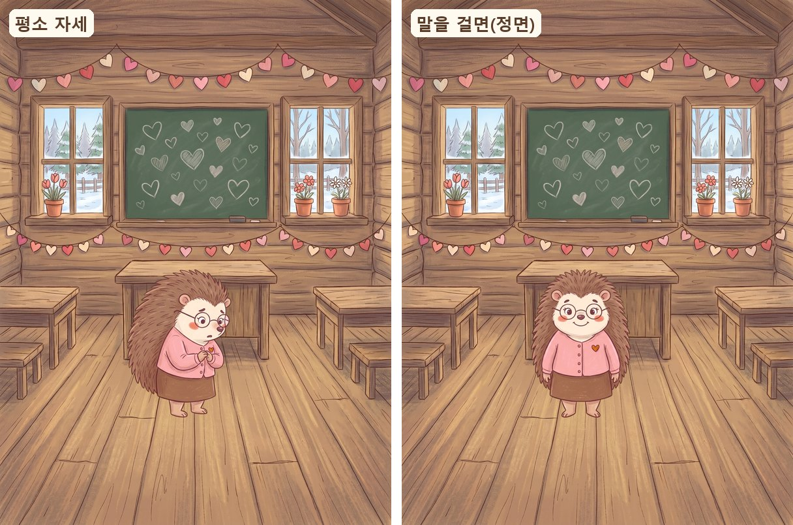
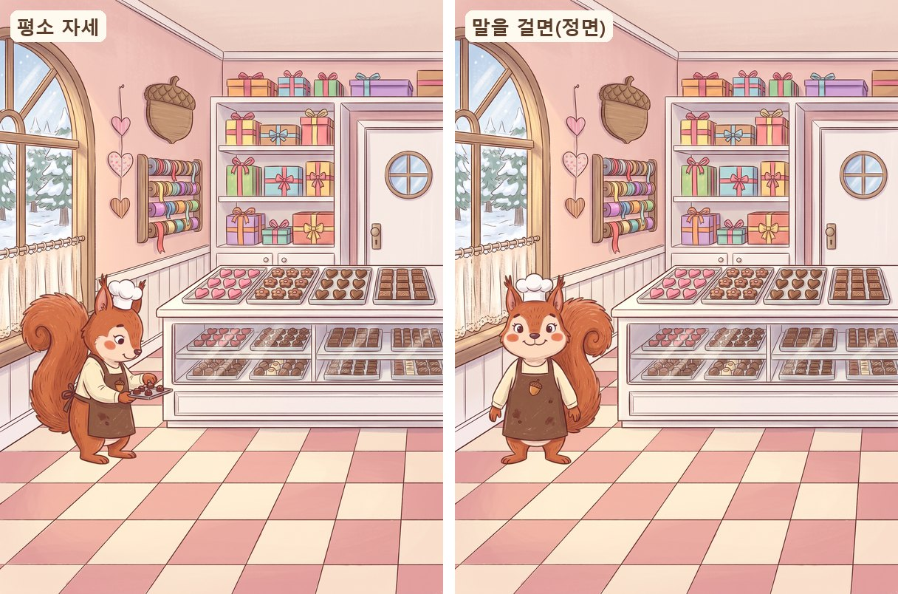
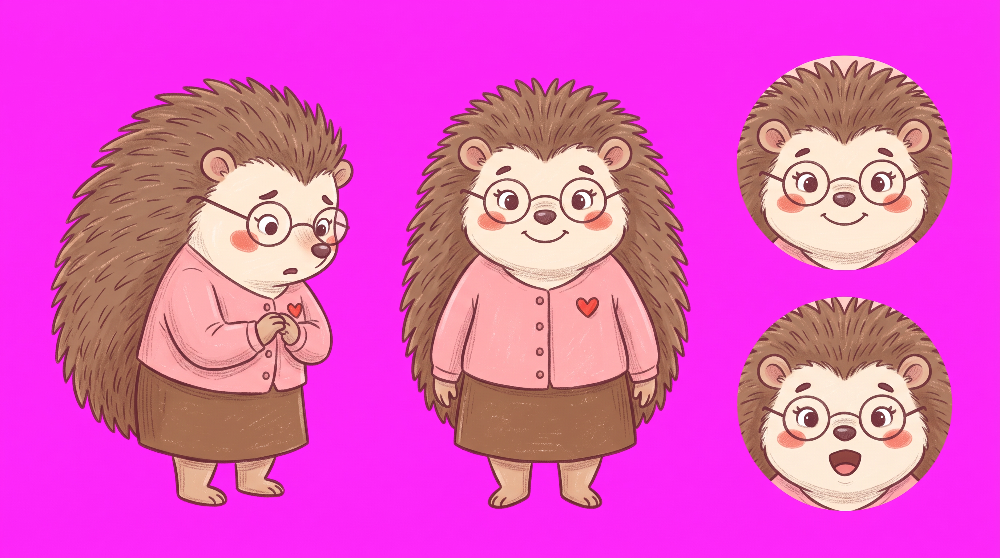
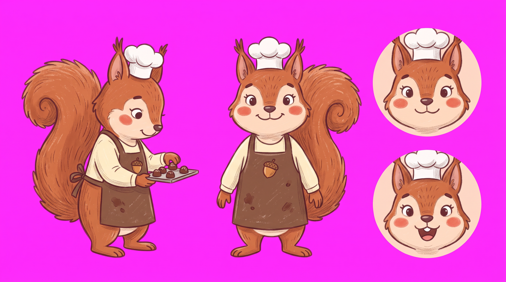
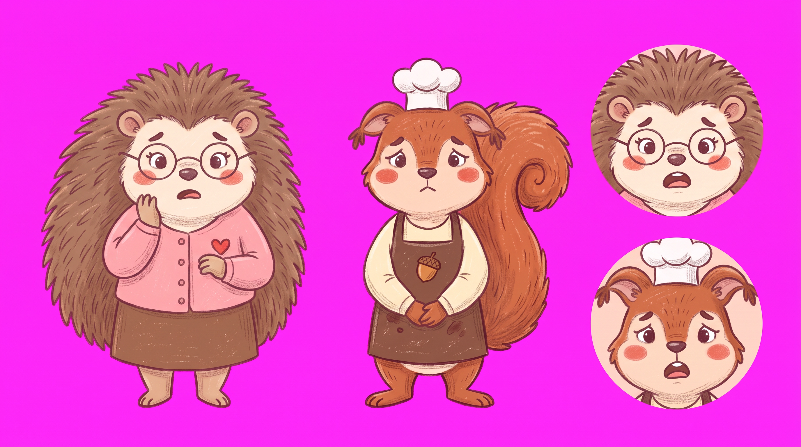

Case 05 (Case 04 뒤)쉬운 사건L1-04 수량 표현범인 없음 · 추리 보드 없음Claude Code 기획 · 사용자 검토 중
무슨 일이 있었나
발렌타인데이 아침, 고슴도치 페니 선생님이 반 학생 13명에게 줄 초콜릿을 다람쥐 수지의 초콜릿 가게에서 받아 왔어요. 학생마다 분홍 하트 · 갈색 하트 · 꽃 · 네모 하나씩, 종류마다 13개, 모두 52개를 주문했어요. 선물 상자 하나에 4개예요.
선생님은 네모부터 선물 상자에 넣었는데, 남은 하트와 꽃을 보니 어딘가 이상해요. 수업에 가야 해서 선생님은 탐정에게 나머지 포장을 부탁해요.
탐정의 일: 주문한 개수를 듣고, 온 개수를 세어, 몇 개가 틀렸는지 찾기
메인 표현too many · not enough · enough · a lot of · a few · some · any 숫자 세기는 초등 수준이라 메인이 아니라 퍼즐을 푸는 도구로만 써요.
주문과 실제
분홍 하트 갈색 하트 꽃 네모주문13131313상자163개 많음13맞음103개 모자람13맞음
합계는 둘 다 52개예요. 수지가 나란히 놓인 쟁반에서 꽃 자리에 분홍 하트 3개를 담았어요. 아무도 훔치거나 먹지 않았어요. (제작자용 전말)
교실 · 페니→노트 받아쓰기 4문항→선물 상자 포장(끌어 놓기)→수지 s1 (a lot of)→주문 확인 쪽지 (too many · not enough)→수지 s2 (some · a few · any)→하트 3 ↔ 꽃 3→선생님께 상자→복습
인물과 장소
페
페니 · 고슴도치새 인물
숲속 학교 교실. 의뢰인이자 선생님이에요. 학생 13명. 차분하지만 수업 시간에 쫓겨 조금 서둘러요.
수
수지 · 다람쥐새 인물
초콜릿 가게 주인. 손이 빠르고 늘 바빠요. 간판과 상자에 도토리 무늬가 있어요. 하트·꽃·네모 쟁반이 나란히 놓인 가게예요.
메인 표현이 나오는 곳
표현
누가, 어디서
플레이어가 하는 일
a lot of
수지 s1 “I made a lot of pink heart chocolates this morning!”
듣고 노트에 기록
too many / not enough
주문 확인 쪽지의 두 칸, 정답 뒤 수지의 확인
쪽지에 직접 골라 씀(결론)
some / a few / any
수지 s2(쪽지 뒤) “Yes, I have some! There are a few in the kitchen. But I don't have any square chocolates today.”
듣고 노트에 기록
enough
결말 페니 “Now there are enough flower chocolates for everyone!”
듣기
페니는 이상하다는 것만 말해요(“Some shapes look wrong.”). 어느 모양이 많고 모자란지는 플레이어가 포장해 보고 정해요. 수지의 s1은 주문은 맞았다는 확인이에요. 갈 곳 없는 분홍 하트가 too many, 빈 꽃 홈이 not enough로 눈에 보여요. too many / not enough는 플레이어가 쪽지에 먼저 쓰고, 수지가 받아서 확인해요. 남은 꽃(s2)은 무엇이 모자란지 안 뒤에 물어요.
쉬운 난도로 맞춘 점
작은 무대
장소 2곳, 인물 2명. 지도도 두 곳만이에요.
짧은 받아쓰기
6문항, 빈칸 14칸 정도. 한 줄에 빈칸 1–3개예요.
숫자 두 개
thirteen과 fifty-two뿐. 가격·계산은 없어요.
세지 않아도 보여요
포장하면 빈 꽃 홈 3개와 남은 분홍 하트 3개가 그대로 보여요. 큰 수를 셀 필요가 없어요.
상자에 끌어 놓기
네모 13개는 페니가 미리 넣어 뒀어요. 나머지 39개는 선물 상자 위 아무 데나 놓으면 맞는 홈으로 들어가요.
차이는 하나
많은 것 하나, 모자란 것 하나, 맞는 것 하나. 숫자는 모두 3이에요.
없는 것
추리 보드, 심문, 현장 사진은 없어요.
장면별 대본
분홍 칸은 플레이어가 고르는 질문, 밑줄은 노트 빈칸이에요. 한국어는 게임에서 해석을 눌렀을 때만 보여요.
1
페니 선생님의 의뢰
교실
페니
Oh, Detective! I'm so glad you're here.아, 탐정! 와 줘서 정말 다행이야.
t0How can I help you?무엇을 도와줄까?
페니
I ordered chocolates for my students. But something is wrong with the box.학생들에게 줄 초콜릿을 주문했어. 그런데 상자가 뭔가 이상해.
I ordered chocolates for my students. Something is wrong with the box.
t1What did you order?무엇을 주문했어?
페니
There are thirteen students. Each student gets one pink heart, one brown heart, one flower and one square.학생이 열세 명이야. 학생마다 분홍 하트 하나, 갈색 하트 하나, 꽃 하나, 네모 하나씩 받아.
There are thirteen students. Each student gets one pink heart, one brown heart, one flower and one square.
선택지에 thirty를 함께 둬요(-teen과 -ty). 이 말이 포장 규칙이 돼요(한 상자에 분홍 하트 하나, 갈색 하트 하나).
t2What's wrong with the box?상자가 뭐가 이상해?
페니
I'm not sure. Some shapes look wrong. I packed all the squares, but I didn't have time to pack the others.잘 모르겠어. 모양이 좀 이상해 보여. 네모는 다 넣었는데, 나머지는 포장할 시간이 없었어.
Some shapes look wrong. I packed all the squares, but I didn't have time to pack the others.
어느 모양이 많고 모자란지는 말하지 않아요. 플레이어가 포장해 보고 알아내요.
t3Where did you buy them?어디서 샀어?
페니
At Suzy's Chocolate Shop. She makes chocolates for Valentine's Day.수지의 초콜릿 가게에서. 발렌타인데이 초콜릿을 만들거든.
At Suzy's Chocolate Shop.
해금 · 초콜릿 가게, 수지
페니
Can you pack the others for me? One box for each student.나머지 포장 좀 해 줄래? 학생마다 한 상자씩.
페니
I have to teach now, so I can't go to the shop. If something is wrong, please talk to Suzy for me.이제 수업을 해야 해서 가게에 못 가. 뭔가 잘못됐으면 나 대신 수지에게 말해 줘.
t0–t3을 모두 기록하고 노트를 닫으면 이 말이 나와요(수지와 가게가 해금된 뒤). 페니는 다른 반 수업하러 교실을 나가고(화면에서 빠짐), 책상 위 초콜릿 상자를 누를 수 있어요. 탐정이 가게에 가는 이유가 이 대사로 생겨요(노트에는 적지 않음). 꽃을 받아 오면 페니가 돌아와요.
2
선물 상자 포장하기
교실 · 상자 확대새 찾고 조립하기
끌어서 ↓ 선물 상자 위에 놓으면 맞는 홈으로 쏙
큰 상자에는 분홍 하트·갈색 하트·꽃 39개가 섞여 있어요. 화면에 숫자는 없어요. 네모 13개는 페니가 이미 넣었어요.
학생 한 명에 한 상자, 선물 상자 13개. 받침에 하트·하트·꽃·네모 모양 홈 4개가 있어요. 네모 홈은 처음부터 차 있어요.
초콜릿을 선물 상자 위 아무 데나 놓으면 그 상자의 맞는 빈 홈으로 쏙 들어가요. 작은 홈을 겨냥하지 않아도 돼요.
한 상자에 같은 색 하트는 둘 못 넣어요. 넣을 자리가 없으면 튕겨서 큰 상자로 돌아가요(벌점 없음). 같은 색 하트로 처음 튕길 때 탐정이 “Ms. Penny said one pink heart and one brown heart.”라고 말해요.
다 찬 상자는 뚜껑이 닫히고 리본이 묶여요.
남은 분홍 하트 3개는 소지품으로, 결과는 포장한 상자 단서 카드로 남아요.
큰 상자에 남은 것분홍 하트 3개 = too many
→ 분홍 하트가 이미 든 상자에 또 놓으면? 튕겨 나와요. 모든 상자에 분홍 하트가 하나씩 들어가면 남은 분홍 하트 3개는 갈 곳이 없어요.
파란 점선 상자 3개는 꽃 모양 홈이 비어 있어요 = not enough. 탐정은 비교하거나 결론을 말하지 않아요.
탐정
Let's ask Suzy about the order.수지에게 주문을 물어보자. (갈 곳만 알려 줌)
가게에 먼저 가서 s1을 이미 들었으면 대신 “Let's tell Suzy.”(수지에게 알리자)라고 생각해요.
s1메인 표현Was Ms. Penny's order right?페니 선생님의 주문은 맞았어?
수지
Yes, it was. Let me see my note… Thirteen of each. That's fifty-two chocolates. I made a lot of pink heart chocolates this morning!응, 맞았어. 메모를 볼게… 종류마다 열셋. 모두 쉰두 개야. 오늘 아침에 분홍 하트 초콜릿을 많이 만들었거든!
Thirteen of each. That's fifty-two chocolates. I made a lot of pink heart chocolates this morning.
주문은 맞았다는 확인이에요. 주문 실수가 아니라 담을 때 틀렸다는 단서가 돼요. 상자 속 개수는 말하지 않아요.
4
주문 확인 쪽지
초콜릿 가게플레이어가 결론 · 메인 표현
포장과 s1이 끝나면 탐정의 선택 대사가 생겨요.
탐정
Ms. Penny's box is not right.페니 선생님의 상자가 맞지 않아.
주문 확인 쪽지
There are too many분홍 하트갈색 하트꽃네모
There are not enough분홍 하트갈색 하트꽃네모
How many?1234
추리 보드가 아니라 쪽지 한 장이에요. 칸은 셋이에요(분홍이 정답).
쪽지 문장이 메인 표현이라 플레이어가 too many / not enough를 직접 쓰는 셈이에요.
노트와 포장한 상자 카드(꽃이 빈 상자 3 · 남은 분홍 하트 3)를 열어 보며 채워요.
틀리면 쪽지가 흔들리고 탐정이 “Let's look at the gift boxes again.”이라고만 말해요.
수지
Oh no! You're right. There are too many pink hearts and not enough flowers. The pink heart tray and the flower tray were next to each other. I'm sorry!이런! 맞아. 분홍 하트는 너무 많고 꽃은 모자라. 분홍 하트 쟁반과 꽃 쟁반이 나란히 있었어. 미안해!
s2메인 표현Do you have any flower chocolates?꽃 초콜릿 있어?
수지
Yes, I have some! There are a few in the kitchen. But I don't have any square chocolates today.응, 좀 있어! 주방에 몇 개 있어. 그런데 오늘 네모 초콜릿은 하나도 없어.
Yes, I have some! There are a few in the kitchen. But I don't have any square chocolates today.
열쇠 포인트 · 긍정문은 some, 부정문은 any. 쪽지를 맞힌 뒤에만 열리는 질문이에요.
꽃을 받으면 페니가 수업을 마치고 교실로 돌아와 책상 옆에 서요. 말을 걸면 이 대사로 시작해요.
페니
Oh, Detective! My class is over.아, 탐정! 수업 끝났어.
꽃이 빈 선물 상자 3개에 받아 온 꽃을 하나씩 끌어 놓아요(들어가면 뚜껑·리본). 13상자가 모두 차요.
탐정
There were too many pink hearts and not enough flowers. Suzy gave me three flower chocolates.분홍 하트는 너무 많고 꽃은 모자랐어. 수지가 꽃 초콜릿 세 개를 줬어. (플레이어가 쪽지로 정한 사실을 다시 말함)
탐정
Here you go. One box for each student.여기 있어. 학생마다 한 상자씩.
페니
Now there are enough flower chocolates for everyone!이제 모두에게 줄 꽃 초콜릿이 충분해!
순서는 자유예요. 포장 전에 가게에 가서 s1을 먼저 들어도 돼요. 쪽지는 포장과 s1이 모두 끝나야 열려요. 도토리 힌트 · 포장 중 막히면 1번째는 꽃 홈이 빈 상자를, 2번째는 남은 분홍 하트를 반짝여요. 쪽지에서는 노트와 포장한 상자 카드를 반짝여요. 결론은 말하지 않아요.
예습과 복습
이번 사건의 열쇠 · 수량 표현
too many / not enough · 필요한 것보다 많다 / 모자라다. There are too many pink hearts.
enough · 충분하다. There are enough flower chocolates for everyone.
a lot of / a few · 많은 / 몇 개의. I made a lot of pink heart chocolates. There are a few in the kitchen.
some / any · 긍정문은 some, 부정문·의문문은 any. Yes, I have some! I don't have any square chocolates.
같이 나오는 것
문법 · 복수형 -s(hearts, flowers, squares), There are ~, each + 단수 명사
단어 · chocolate, heart, pink, brown, flower, square, shape, student, order, pack, others, gift box, each, enough, a lot of, a few, some, any, too many, thirteen, fifty-two, kitchen, wrong, Valentine's Day
다시 들을 문장 후보 · s1(a lot of), s2(some / a few / any), t1(thirteen)
제작
새로 만들 엔진 기능
기능
내용
비슷한 기존 기능
선물 상자 포장
초콜릿을 끌어 선물 상자 위에 놓으면 그 상자의 맞는 빈 홈으로 들어감. 한 상자에 같은 색 하트 둘은 안 됨. 넣을 자리가 없으면 튕기고, 같은 색 하트로 처음 튕길 때 탐정 대사. 다 찬 상자는 뚜껑·리본. 남은 것은 소지품, 결과는 단서 카드. 받아 온 꽃로 빈 자리 채우기
연 사건의 덮개 치우기, 확대 조사
주문 확인 쪽지
쪽지 한 장의 고르기 칸 3개. 틀리면 흔들림, 맞으면 다음 대사
추리 보드의 빈칸 드롭다운
건네고 받기
남은 분홍 하트 3 → 꽃 3
소풍 가방의 건네기·받기
새 문법 카드
수량 표현(too many / not enough / enough / a lot of / a few / some / any)
다른 문법 카드
그림·녹음 (만들기 전에 견적을 알리고 확정)
무엇
새로·재사용
비율
메모
페니 선생님(고슴도치)
새로
인물 시트
기본·걱정·기쁨 + 말하는 입
교실
새로
3:4 세로
칠판의 하트 장식, 책상 위 상자. 띠 + 바닥으로 자름
초콜릿 시트
새로
16:9 한 장
분홍 하트·갈색 하트·꽃·네모 초콜릿, 큰 상자(닫힘·열림), 작은 선물 상자(받침에 하트·하트·꽃·네모 모양 홈 4개, 리본 묶은 것)
실루엣은 하트·꽃·네모로 또렷이 다르게(하트는 분홍·갈색 두 색, 색을 확실히 다르게), 장식은 모양마다 한 가지 스타일로 통일해서 작은 칸에서도 헷갈리지 않게 해요. 레퍼런스: 실제 봉봉 초콜릿.
모양
바탕
장식
분홍 하트
딸기 분홍 초콜릿, 윤기
흰 초콜릿 드리즐 줄무늬, 작은 금빛 하트 토퍼, 가장자리 하이라이트
갈색 하트
윤기 나는 밀크 초콜릿
분홍 드리즐 줄무늬, 작은 흰 진주 알갱이 몇 개
꽃
연한 밀크 초콜릿, 도톰한 꽃잎 5장
가운데 흰 초콜릿 동그라미와 분홍 스프링클, 꽃잎마다 결 무늬
네모
진한 다크 초콜릿, 모서리가 살짝 둥근 사각
흰 초콜릿 지그재그 드리즐, 한쪽 모서리에 금박 조각이나 아몬드 반쪽
공통: 게임 그림과 같은 동화풍 손그림·연필 외곽선, 윤기와 하이라이트, 주름 종이 컵 받침은 빼기(선물 상자 칸과 겹치지 않게), 위에서 내려다본 각도. 시트에 큰 초콜릿 상자(닫힘·열림), 작은 선물 상자(홈 4개·리본), 남은 분홍 하트를 담을 작은 봉투도 함께. 만들기 전에 프롬프트와 견적을 먼저 보여 드려요.
그림 제작 계획 (상세)
사용자 요청(2026-11-26): 견적보다 어떻게 만들지를 먼저 정한다. 모든 그림은 Higgsfield Nano Banana 2.1로 만들고, 원본 시트(*-higgsfield-original.png)를 남긴 뒤 스크립트로 잘라 쓴다(기존 사건과 같은 방식, HANDOFF.md 7절).
공통 원칙
화풍 맞추기: 참조 그림으로 화단 사건의 characters/gus-ollie-higgsfield-original.png(인물)과 places/flowerbed/garden.webp(장소)를 넣고 프롬프트에 "drawing style only"라고 적는다. 동화풍 손그림, 크레용 결, 갈색 연필 외곽선, 따뜻한 색. 살아 있는 작가 이름은 쓰지 않는다.
글자 없음: 간판·칠판·포스터에 글자를 그리지 않는다(그림 속 글자는 깨지기 쉽고 해석 규칙과도 겹침). 하트·도토리 같은 그림 기호만.
배경 분리: 인물·물건 시트는 마젠타 단색 배경(#FF00FF)으로 그려 스크립트로 뺀다(화단·우산 사건과 같음). 가장자리가 지저분하면 Higgsfield remove_background를 쓴다.
장소는 3:4 세로 2K(규칙): 1376 폭으로 줄여 위 768을 조사 화면 띠, 아래를 대화 화면 바닥(ART_FLOOR)으로 자른다. 인물이 설 자리는 가운데쯤, 빈 바닥이 그림 아래 끝까지.
움직이는 것은 따로: 장면에서 상태가 바뀌는 것(큰 상자, 선물 상자, 초콜릿, 페니가 자리를 비움)은 배경에 그리지 않고 따로 그려 위에 얹는다.
한 단계씩 사용자 확인: 아래 순서대로 한 장 만들 때마다 보여 주고, 승인받은 뒤 다음 장으로 간다.
만드는 순서와 각 그림
배경을 먼저 만들어요(사용자 결정 2026-11-26): 인물의 평소 자세·크기·빛을 장소에 맞춰야 해서 교실 → 가게 → 인물 시트 순서예요. 인물 시트에는 그 인물이 서는 배경을 참조로 넣고, 배경을 본 뒤 자세(책상·계산대 높이 등)를 고칠 수 있어요.
배치: 숲속 학교 교실. 뒤쪽 벽에 초록 칠판(분필로 그린 하트들, 글자 없음), 나무 창문 밖 숲. 가운데 앞쪽에 선생님 책상(위는 비워 둠: 큰 상자와 선물 상자는 따로 얹음). 책상 왼쪽에 페니가 설 빈 바닥. 작은 학생 책상들은 양옆 뒤쪽에 조금만. 벽에 종이 하트 장식 줄.
학생은 그리지 않는다(아래 "정할 것" 1).
살펴볼 것 — 탐정 한마디(사용자 요청 2026-11-26: 배경마다 미리 정함, 단서가 아닌 물건, 사진 없이 나레이션만). 그림에 꼭 들어가야 해요.
물건
탐정
해석
들리는 표현
칠판의 하트
There are a lot of hearts on the board.
칠판에 하트가 많이 그려져 있어.
a lot of
창가 화분
There are some flowers by the window.
창가에 꽃이 좀 있네.
some
종이 하트 장식 줄
Pretty paper hearts! It's Valentine's Day.
예쁜 종이 하트야! 오늘은 발렌타인데이구나.
—
책상 위 큰 초콜릿 상자는 물건이 아니라 포장 확대로 들어가는 곳이에요.
잘라 쓰기:scripts/cut-valentine-places.py(새로) — 1376 폭, 띠 시작 위치는 그림을 보고 정함(칠판과 책상이 띠 안에), 아래는 바닥.
프롬프트 초안"A cozy forest school classroom on Valentine's Day morning, vertical 3:4, children's storybook illustration, crayon texture, soft pencil outlines. A green chalkboard on the back wall with chalk-drawn hearts (no letters), wooden windows showing the forest with a small pot of flowers on the windowsill, paper heart garlands. A teacher's wooden desk in the front center with an empty top. A few small student desks at the back sides. Empty wooden floor continuing to the bottom edge. No characters, no text."
2. 초콜릿 가게 (3:4 세로)
소재는 교실과 다르게(사용자 요청: 둘 다 나무면 같아 보임): 분홍 회벽 + 흰 징두리판, 분홍·크림 체크 타일 바닥, 레이스 커튼 아치 창.
배치: 작은 나무 가게. 가운데 유리 진열 계산대, 그 위에 분홍 하트·갈색 하트·꽃·네모 쟁반 네 개가 나란히(분홍 하트와 꽃 쟁반이 바로 붙어 있게: 사건의 원인이 그림으로 보임). 뒤쪽 선반에 선물 상자들, 오른쪽 뒤에 주방 문(수지가 "in the kitchen"이라고 할 곳). 처마 밑에 도토리 모양 간판(글자 없음). 계산대 옆에 수지가 설 빈 바닥.
1번 교실을 참조로 넣어 빛·색을 맞춘다.
살펴볼 것 — 탐정 한마디(사용자 요청 2026-11-26: 배경마다 미리 정함, 단서가 아닌 물건, 사진 없이 나레이션만). 그림에 꼭 들어가야 해요.
물건
탐정
해석
들리는 표현
선반의 선물 상자
There are a lot of gift boxes on the shelf.
선반에 선물 상자가 많아.
a lot of
주방 문
The kitchen is behind this door.
이 문 뒤가 주방이야.
— (s2 "in the kitchen"의 자리)
도토리 간판
The sign looks like an acorn!
간판이 도토리 모양이야!
—
계산대의 쟁반 네 개는 누를 수 없게 둬요(분홍 하트·꽃 쟁반이 붙어 있는 건 수지가 쪽지 뒤에 말하는 원인이라 탐정이 먼저 말하면 답이 돼요). 그림으로만 보여요.
프롬프트 초안"A small wooden chocolate shop run by a squirrel, vertical 3:4, children's storybook illustration, crayon texture, soft pencil outlines, warm light. A glass display counter in the center with four trays side by side on top: pink heart chocolates, brown heart chocolates, flower-shaped chocolates and square chocolates; the pink heart tray and the flower tray touch each other. Shelves with ribbon gift boxes behind, a kitchen door at the back right, an acorn-shaped sign with no letters, Valentine decorations. Empty floor beside the counter and down to the bottom edge. No characters, no text."
3. 인물 시트 — 한 사람에 한 장(평소 자세·정면·말하는 입)
페니 한 장, 수지 한 장(16:9 2K, 마젠타, 사용자 결정 2026-11-26). 참조: 화풍 그림 + 그 인물이 서는 배경(페니 = 1번 교실, 수지 = 2번 가게: 크기·빛·색과 평소 자세를 책상·계산대에 맞춤). 수지 장에는 페니 장도 넣어요.
왼쪽 — 평소 자세(탐정이 말을 걸기 전, :work 그림): 페니는 책상 위 큰 초콜릿 상자를 들여다보며 초콜릿 하나를 들고 고개를 갸웃. 수지는 쟁반에 초콜릿을 가지런히 놓는 중(꼬리가 보이게).
가운데 — 정면(말을 걸면 나오는 대화 그림): 전신, 살짝 비스듬한 정면, 입은 다문 기본 표정.
오른쪽 — 말하는 입: 정면 얼굴과 같은 크기의 입 부분 둥근 조각 두 개(다문 입 / 벌린 입). 잘라서 정면 그림에 얹어요.
페니: 작고 동그란 고슴도치, 부드러운 갈색 가시. 둥근 안경, 연한 분홍 카디건과 무릎길이 치마, 가슴에 작은 하트 브로치. 다정하고 조금 바쁜 표정.
수지: 날씬한 다람쥐, 크고 폭신한 꼬리. 초콜릿색 앞치마에 도토리 무늬 하나, 작은 흰 요리 모자. 앞치마에 초콜릿 얼룩 한두 점. 손이 빠른 느낌의 밝은 표정.
잘라 쓰기:scripts/cut-valentine-characters.py(새로) — 평소 자세 penny-work·suzy-work, 정면 penny-higgsfield·suzy-higgsfield(높이 700px), 입 mouths/penny·suzy-closed·open, 얼굴 아이콘 160×160. SPRITES·MOUTHS 값을 출력.
프롬프트 초안(페니)"Character sheet of one forest animal on a flat magenta (#FF00FF) background, children's storybook illustration, crayon texture, soft brown pencil outlines, warm colors. A small round hedgehog teacher with soft brown spines, round glasses, a light pink cardigan and knee-length skirt, a tiny heart brooch. Left: full body in a slight side view, looking down at a chocolate she holds, head tilted, puzzled. Center: the same teacher full body, standing, facing the viewer in a slight three-quarter view, kind, mouth closed. Right: two round close-up patches of her face around the mouth at the same scale as the center figure, top with the mouth closed, bottom with the mouth open as if talking. Well separated, no text. Drawing style only from the reference."
그린 그림 — 배경에 세워 보기
배경과 인물 시트는 만들었고 아직 게임에는 넣지 않았어요. 왼쪽은 탐정이 말을 걸기 전 평소 자세, 오른쪽은 말을 걸면 나오는 정면이에요. 자리와 크기는 시험으로 놓아 본 값이에요.

교실 + 페니 · 페니가 책상 바로 앞에 서면 책상(큰 상자를 얹을 곳)을 가려서, 게임에서는 옆으로 비켜 세우는 게 좋아요

초콜릿 가게 + 수지 · 계산대 위 쟁반은 분홍 하트 → 꽃 → 갈색 하트 → 네모


인물 시트 원본(평소 자세 · 정면 · 입 조각 둘)
4. 표정 시트
만든 것(사용자 요청: 한 장에 둘, 정면으로는 어색한 표정만): 페니 걱정(t0–t2)·수지 미안(쪽지 정답 뒤) + 각자 벌린 입 조각. 기쁨은 정면이 이미 웃는 얼굴이라 만들지 않았어요.

(처음 계획)
3번 인물 시트를 참조로 넣고 얼굴과 손만 바꾼 4가지를 한 장에: 페니 걱정(손을 볼에, t0–t2), 페니 기쁨(두 손을 모음, 결말), 수지 미안(귀가 처지고 손을 모음, 쪽지 정답 뒤), 수지 기쁨(꽃 초콜릿 세 개를 내밂).
옷·크기·선 굵기는 3번과 똑같이. 자르기는 같은 스크립트.
5. 입 — 3번 인물 시트에 함께 그려요(따로 만들지 않음)
6. 초콜릿·상자 시트 (가장 중요, 예쁘게)
보는 각도: 위에서 내려다본 모습(flat lay). 퍼즐에서 초콜릿을 선물 상자 홈에 겹쳐 놓아야 하므로, 초콜릿·홈·상자가 모두 같은 각도여야 딱 맞는다. 위에서 봐도 장식이 잘 보인다.
초콜릿 4개(각 1개): 위 "초콜릿 그림 방향"의 장식 그대로. 분홍 하트(딸기 분홍, 흰 드리즐, 금빛 작은 하트), 갈색 하트(밀크, 분홍 드리즐, 흰 진주), 꽃(도톰한 꽃잎 5장, 가운데 흰 초콜릿과 분홍 스프링클), 네모(다크, 흰 지그재그, 금박 한 조각). 크기는 넷이 거의 같게.
큰 상자: 닫힌 것(리본, 도토리 무늬 뚜껑), 연 것(안쪽이 비어 있음: 초콜릿 39개는 코드로 흩어 얹음).
선물 상자: 연 것(받침에 하트·하트·꽃·네모 모양 홈 4개가 2×2, 홈은 초콜릿 실루엣과 같은 모양·크기, 비어 있어도 모양이 보이게 살짝 그늘), 닫은 것(뚜껑 + 분홍 리본).
소지품용: 분홍 하트 세 개가 든 작은 비닐 봉투, 꽃 세 개가 든 작은 봉투.
잘라 쓰기:scripts/cut-valentine-props.py(새로) — 칸마다 잘라 투명 webp. 선물 상자 연 것에서 홈 네 곳의 가운데 좌표를 재서 출력(코드가 초콜릿을 얹을 자리).
프롬프트 초안"Item sheet on a flat magenta (#FF00FF) background, top-down flat-lay view, children's storybook illustration with crayon texture and soft pencil outlines, glossy and pretty. Row 1: four bonbon chocolates of the same size — a glossy strawberry-pink chocolate heart with white drizzle and a tiny gold heart topper; a glossy milk-chocolate heart with pink drizzle and a few white pearls; a plump five-petal milk-chocolate flower with a white-chocolate center and pink sprinkles; a dark-chocolate square with rounded corners, a white zigzag drizzle and a small gold-leaf flake. Row 2: a large chocolate box closed with a ribbon and an acorn pattern lid, and the same box open and empty inside. Row 3: a small gift box open showing a tray with four molded cavities in a 2x2 grid shaped exactly like a heart, a heart, the flower and the square; the same gift box closed with a pink ribbon. Row 4: a small clear bag with three pink heart chocolates, a small clear bag with three flower chocolates. Items well separated, no paper cups, no text. Use the reference photos only for chocolate shapes and decorations."
사용자 레퍼런스 3장은 "모양과 장식 참고"로만 넣는다(사진풍이 섞이지 않게 화풍은 3번 인물 시트 참조로 고정).
7. 작은 지도 (1:1)
교실이 있는 숲속 학교와 초콜릿 가게, 둘을 잇는 오솔길. 다른 사건의 사건별 지도(바이올린 map-hall, 크리스마스 map-festival)와 같은 크기·방식. 글자 없음. 핀은 PLACES[].x/y로 건물 위에.
8. 사건 목록 표지·복습 사진 (새로 안 만듦)
표지: 교실 그림의 책상 부분에 리본 묶은 선물 상자 몇 개와 큰 상자를 얹어 합성(scripts/make-valentine-cover.py, 4:3 800×563, 우산 표지처럼).
복습 사진: 13상자가 다 찬 모습(선물 상자 닫은 그림 13개를 나란히 합성).
그림과 엔진이 맞물리는 곳
장면
쓰는 그림
코드가 하는 일
교실 대화
교실 띠·바닥, 페니(기본·걱정)
페니 위치 NPC_POSITIONS, 말할 때 입
포장 확대
교실 띠 확대 + 큰 상자(연 것) + 선물 상자 13개 + 초콜릿
초콜릿 39개를 큰 상자 안에 흩어 얹음, 끌어 놓은 상자의 맞는 홈 좌표로 쏙 넣음, 넣을 자리가 없으면 튕김, 다 찬 상자는 닫은 그림으로 바꿈
가게 대화·쪽지
가게 띠·바닥, 수지(기본·미안·기쁨)
쪽지는 코드로 그림(종이 질감은 기존 노트 종이)
바꾸기·결말
봉투(분홍 하트·꽃), 페니(기쁨)
소지품 건네기·받기
정할 것(그림)
1. 페니가 수업하는 동안: 교실을 나가요(다른 반 수업, 화면에서 빠짐). 꽃을 받아 오면 돌아와요. 학생을 그리지 않아도 되고 탐정 혼자 포장하는 장면이 자연스러워요.
2. 초콜릿 시트 각도: 위에서 내려다본 모습(flat lay). 홈에 겹쳐 놓기 쉬워요.
3. 수지의 요리 모자: 작은 흰 요리 모자를 써요(가게 주인이 한눈에).
크레딧 견적(Higgsfield nano_banana_2_1, 2026-11-26 조회): 2K 한 장 2, 1K 한 장 1.5. 교실 2 · 가게 2 · 인물 2장 4 · 표정 2 · 입 0(인물 시트에 함께) · 초콜릿·상자 2 · 지도 1.5 = 13.5크레딧(다시 그리기 한두 번 더하면 약 15–17). 표지·복습 사진은 합성이라 0. 한 장씩 확인 뒤 다음 장, 녹음은 따로 견적.
정할 것
그림 쪽 3가지는 정했어요(사용자 2026-11-26, 추천대로) · 남은 것: 사용자 승인 뒤 1번 교실부터 한 장씩(배경 먼저).
정한 것 · 쉬운 난도 · 새 인물 고슴도치 페니 · 새 인물 다람쥐 수지(초콜릿 가게) · Claude Code 기획 · Case 04 바로 뒤(새 Case 05) · 메인 표현은 수량 표현(가격 듣기는 다음 사건 후보) · some / any는 쪽지 앞 받아쓰기(s2) · 선물 상자는 분홍 하트·갈색 하트·꽃·네모 4칸(52개), 같은 색 하트 둘은 못 넣음, 상자에 끌어 놓기 · 점검 반영: 페니는 이상하다는 것만, s1은 주문 확인 + a lot of, s2는 쪽지 뒤, 네모는 페니가 미리 넣음 · 2차 점검: 결말에서 탐정이 알림, 부탁은 t0–t3 뒤, 수업 중 페니는 교실을 나감, 먼저 간 경우 “Let's tell Suzy.”, 페니 복귀, 도토리 힌트